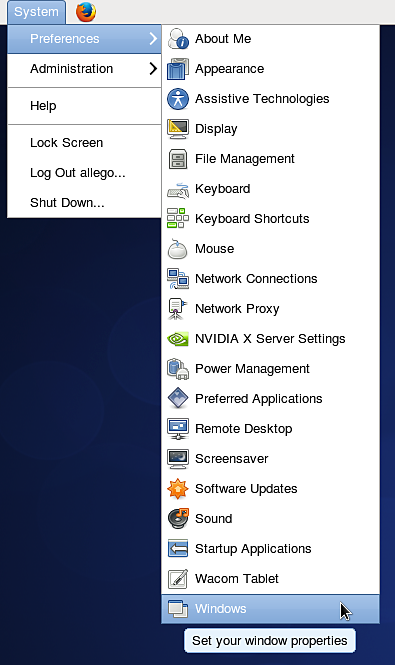
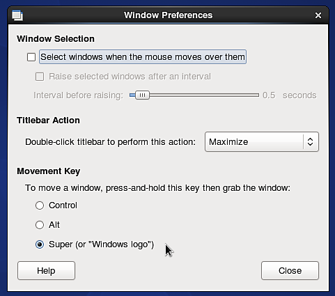
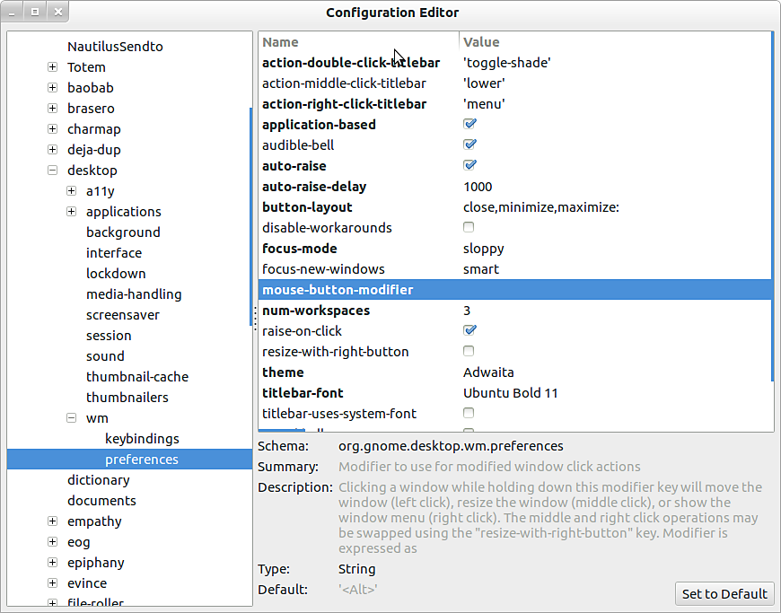

If you are running a Linux distribution (Ubuntu or CentOS) which use Gnome as user interface, you might want to disable the default behavior of the ALT key to be able to navigate in the viewport.
1 - Go to System > Windows

2 - Change the "movement key" setting to something else than " Alt ". For example use " Super " (to choose the "Windows" key of your keyboard).

1 - Open a terminal and run the following command:
sudo apt-get install dconf-tools
This will install an advanced configuration tool, you might have to allow additional dependencies to be installed to be able to run it.
2 - Open the start menu and look for " Dconf-tools ". Launch it.
3 - Expand the tree menu on the left by going to the following route : org > gnome > desktop > wm > preferences
4 - Edit the "mouse-button-modifier" and change it value. Set it or instead, but don't leave it empty . Super is an equivalent to the "Windows" key.
